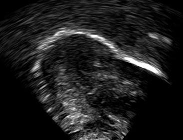
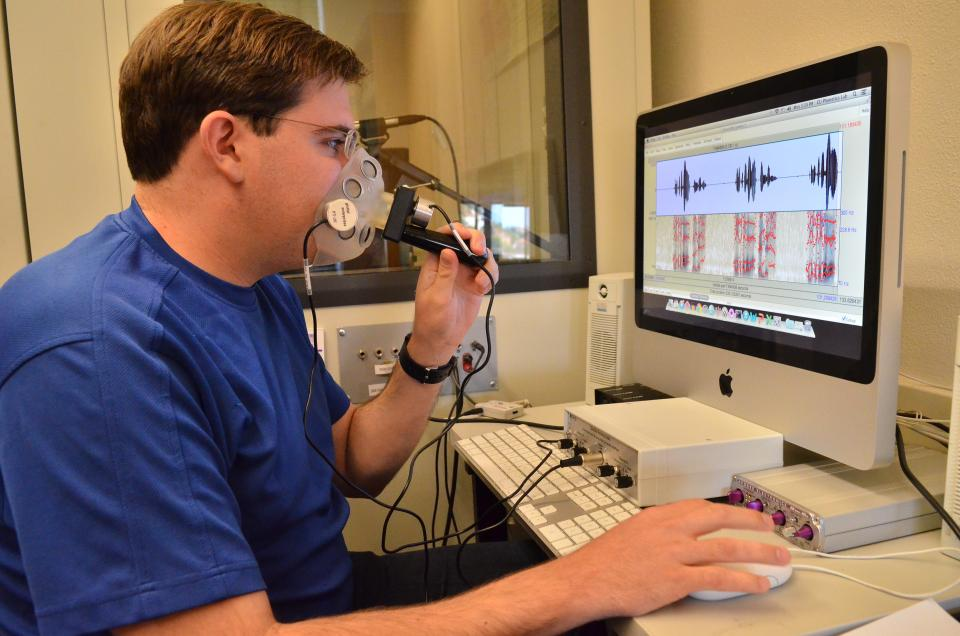
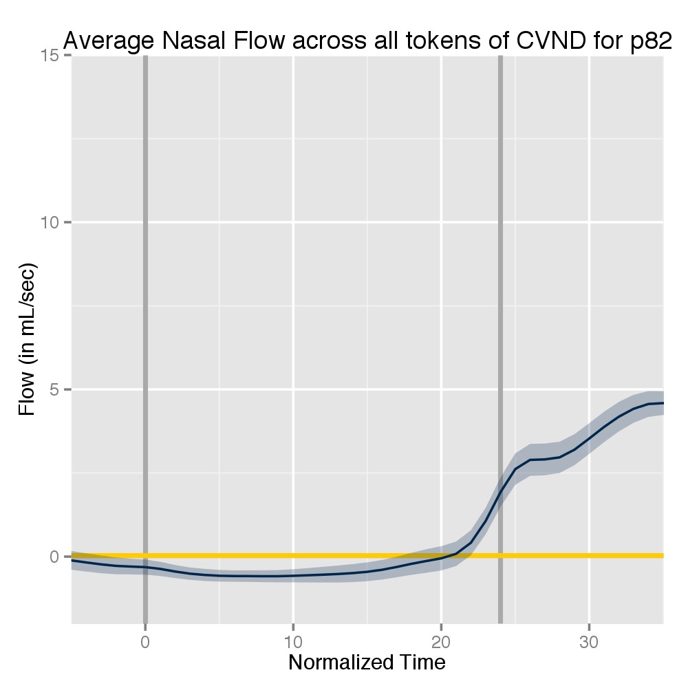

Will Styler
http://savethevowels.org/talks/colloq_ucriverside_2021.html
What is Linguistics, and why?
The state of statistics in linguistics
Phonetics and Coarticulation
Complexity from complex data types
Complexity from complex questions
Why is this a problem for our field?
Why should statisticians and linguists team up more often?
What is this thing I’m doing right now with my flapping bits of meat around in my head and you then understanding my thoughts?
How can we describe what languages are doing?
How can we understand the differences and similarities among them?
What does language tell us about cognition and culture?
Many linguists speak lots of languages, but some don’t!
We’re interested in the whole enterprise, and study it scientifically
“How does talking and understanding speech work?” - Phonetics
“How do units of sound or gesture change when we combine them?” - Phonology
“How do we build words?” - Morphology
“How do we combine words into sentences?” - Syntax
“How do we understand meaning in language, both generally and in context?” - Semantics and Pragmatics
“How does this less-well-known language work?” - Lg. Documentation
… and many more!
Some folks still work in armchairs
Theory is now often supported by quantitative or experimental data
Text data (e.g. large corpora)
Survey data (e.g. responses, free text)
Experimental data (e.g. eye tracking, reaction time, accuracy)
Neural data (e.g. EEG, fMRI, PET, MEG)
Imaging data (e.g. video, ultrasound)
Spatial data (e.g. GIS info, 3D spatial movement tracking)
“Statistics for Psychology Graduate Students”
Increasingly more sophisticated classes are available
“Probabilistic Methods in Linguistics” (an intro to Bayesian stats in our department)
“Analyzing time series data using Generalized Additive Models” at the Linguistic Institute
Winter, Bodo (2020). Statistics for Linguists: An Introduction Using R. Routledge.
Some specializations (e.g. neurolinguistics) require advanced models to function
Some linguists are statistical thought-leaders and have strong expertise
Some statisticians moonlight in linguistics (to varying degrees of success)
The vast majority of linguistic work in these core fields is still supported by more basic methods
T-Tests and Chi-Square are being phased out in publication
ANOVA and basic linear models are probably still the mode
Most experiments have some decidedly random random factors
Usually implemented using lmer in R
Reviewers are starting to demand mixed models where relevant
… but mixed models are right at the edge of many linguists’ understanding
“Giving Linear Mixed Models to Linguists is like giving shotguns to toddlers”
Larger and larger text corpora are allowing (and forcing) massive analyses
Interdisciplinary work often inherits the toolchains of related methods
New experimental methods require new technology to process it
More nuanced questions require more nuanced examinations
Complex data requiring complex analysis
Nuanced questions requiring nuanced analysis
We’re going to examine both in the context of linguistic phonetics
My focus is on understanding exactly what’s happening in the mouth when we talk
“What are you doing inside your body to produce this word?”
“How are listeners able parse or reconstruct that to understand that you’ve produced this word”
… and we’re going to focus on some phonetic questions today
Speech can be defined as a sequence of gestures of the tongue, lips, larynx and other speech articulators
Gestures of the tongue and mouth are the smallest units of spoken language
Gestures are likely the object of human speech perception
Both of the claims above could cause a fistfight at a conference, but let’s hold them as true for this talk.
We write letters one after the other, but letters are lies
The lines between gestures tend to blur
Speech sounds are not beads on a string
We often begin moving our articulators towards the next gesture before we’ve finished the current one
This overlap is called coarticulation
A nice example: ‘car key’
“Car key” is changing the articulation of one sound to better ‘match’ the next
We will often start to articulate the /l/ in words like ‘bulk’ before we’ve finished the vowel
Air starts flowing out the nose in words like ‘bend’ before we actually make the /n/ sound where it’s supposed to
It provides redundancy in signaling speech contrasts
It provides information about upcoming sounds before they arrive
It can help to reconstruct ‘missing’ sounds
So we want to learn more about the gestures we’re making, and how they overlap
We want to see exactly which gestures are happening inside your head and when
… but your head is frustratingly opaque
First by ear training, now using DSP and frequency-domain analysis
We’ve often focused on finding quantifiable acoustic measures which covary with the articulatory properties under study
Other methods of measuring articulator motion and position do exist
Imaging of tongue motion and position is ideal!
Pulse high-frequency sound waves into the body
Measure the patterns in which they return to image internal structure
The resulting data are black and white image frames showing areas of high and low reflection
Captures the motion of the tongue in (generally) two dimensions
Offers 60+ frames per second time resolution
Ideal for tracking the relative location and contour of the tongue and
The machine outputs a series of images (or grayscale matrices) at a fixed sampling rate
We transform images into lists of ordered points representing the tongue shape and location
This is done by the researcher and team directly

| ### Technical Notes |
| - There are some approaches which use PCA on whole-frame images to isolate meaningful components and skip this process (c.f. Faytak et al. 2020) |
| - There are many problems with normalizing position and orientation between speakers and words which are not discussed here but which are Fun™ |
What is the average/min/max height of the tongue?
What’s the front-back distribution of the tongue?
How do tongue contours differ between sounds?
How do tongue contours change during sounds?

Usually done using Smoothing Spline ANOVA in Linguistics
Occasionally mixed models with B-Splines, Generalized Additive Models (GAM), and Growth Curves
This is a place where speakers vary
We can look at the time course of the vowel+l portion of the word


Quantifying the degree of change in a 50 point spline which changes contour and position over time
Identifying the onset of the contour change in time
Identifying specific types of contour change which are most relevant
There isn’t a well-established statistical method for doing this in our field!
Not because it is impossible, but because the myriad complexities
/n/ is a ‘nasal’ sound, with airflow from the nose


…but there’s more to it than the symbols show us!
In the word “bend”, we start nasal airflow before the nasal /n/, during the vowel

Oral and nasal flow in mL/sec
Sampled (here) at 50 points through the vowel


| ### Some speakers show only a bit of coarticulation |
|  |

Ranging from ‘practically none’ to ‘it’s all nasal’
Inference can be done using splined mixed models, GAMs, and more
Often done using eyetracking
“When does the participant look at the correct image on the screen?”
“Does this person use vowel nasality to choose ‘send’ over ‘said’ more quickly?”
For each trial, 1000 binary points over the course of a second, ‘Are they looking at the nasal word?’
0000000000000001111111111…
Occasionally 00000000000000011111111110000000…
Many, many trials are averaged out to create response curves
“Early Nasalization”: Coarticulation begins very early in the vowel
“Late Nasalization”: Coarticulation begins later in the vowel
How early is information about the word made available to listeners?
People who use coarticulation strongly in perception will decide ‘send’ over ‘said’ earlier for ‘early’ nasalization tokens
People who don’t use coarticulation in perception will show little distinction between the conditions


… and production
This allowed us to ask one very large question…
Put differently, do people who coarticulate early, listen for it early?
This was tested in Beddor et al. 2018
It gets at the heart of the gesture vs acoustics debate in speech perception
It tells us about the role of our own productions in guiding our learning of a language
It has massive implications for how languages change over time
Correlating a functional airflow curve (with massive variation in values) with the overall trend across a large set of logistic time series from eye tracking trials
We have truly random factors we want to get rid of
Some speaker factors we want to get rid of
Other speaker factors we want to study
We’re interested in speaker variation, but the experiment was so complex that we could only collect 42 participants
Yikes
This gave us a single quantity representing timing and degree of coarticulation (‘PC2’) which we could insert into a model of perception
The perception model was run using mcmcglmm in R,
with b-splines to model temporal variation

(Adapted from Beddor et al 2018)
The production/perception link is very interesting, and uniformly hard to analyze
… and there are a million other domains to test it in
We’ve moved from single variable correlations into functional data
New methods are arriving
Our data keep getting richer and bigger
We’ve moved from presence/absence into time course information
We’re now increasingly studying the kinds of variability which conventional models attempt to factor out
Potentially explanatory data is seldom low-dimensional!
Grad level Psych Stats has very little to say about comparing 3D meshes of tongue motion by conditions
Reviewers are generally chosen for knowledge of specific linguistic domains (e.g. coarticulation or French nasality), and have vastly variable statistical backgrounds
Keeping up with the statistical state-of-the-art is a full-time job, and it’s very easy to miss things
You are quite literally always using language
It offers a diversity of data types, often in the same experiments
Linguistic knowledge is helpful for breaking into Natural Language Processing, and other language-focused data science
Increasing number of questions have small and hard-to-model effects
It’s very possible that ‘straightforward’ techniques in statistics could be revolutionary in our field
Collaborations can be mutually rewarding and mutually beneficial
There’s a growing understanding that we probably shouldn’t claim to be masters of two disciplines at once
There is increasing discussion of hiring statisticians in departments and divisions for consulting and collaboration
Statisticians who know even basic elements of language will be increasingly valued in industry and life
Linguistic work is often held back by relatively basic inference approaches
Increased complexity of data, and increased complexity of questions, both leave ample room for collaboration
New methods in statistics likely have testable uses in language
And people collaborating in this world have a very real chance to make a difference in both fields
Next time you’re looking to branch out, remember that we linguists are here
That we’ve got amazing data
… and at the very least, you can use your knowledge to help teach a toddler proper statistical safety
Questions? wstyler@ucsd.edu